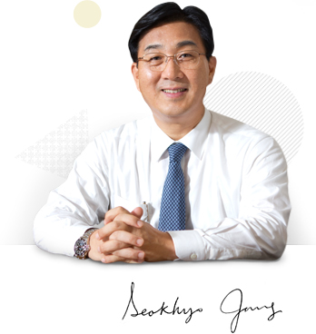

<!DOCTYPE html PUBLIC "-//W3C//DTD XHTML 1.0 Transitional//EN" "http://www.w3.org/TR/xhtml1/DTD/xhtml1-transitional.dtd">
<html xmlns="http://www.w3.org/1999/xhtml" xml:lang="en" lang="en">
<head>
<meta http-equiv="Content-Type" content="text/html; charset=utf-8"/>
<link rel="stylesheet" href="../../../resources/en/css/common.css" type="text/css" />
<script type="text/javascript" src="http://code.jquery.com/jquery-1.9.1.js"></script>
<script type="text/javascript" src="../../../resources/en/js/lib/jquery.mousewheel.js"></script>
<script type="text/javascript" src="../../../resources/en/js/lib/jquery.jscrollpane.min.js"></script>
<script type="text/javascript" src="../../../resources/en/js/lib/selectbox.js"></script>
<script type="text/javascript" src="../../../resources/en/js/gas.js"></script>

<title>KOGAS - Greetings</title>
</head>

<body>
	<div id="accessibility">
		<a href="#conarea">Skip to content</a>
	</div>

	<!-- wraparea -->
	<div id="wraparea">
		<!-- header -->
		<div id="header">
			<div class="h_heading">
				
			</div><!-- // h_heading -->
			<div class="h_visual">
				
			</div><!-- // h_visual -->
		</div>
		<!-- // header -->
		<div class="clear"><!-- clearBlock --></div>
		<hr/>

		<!-- conarea -->
		<div id="conarea">
			<div class="lnbarea">
				
			</div>
			<div class="contents">
				<ul class="location">
					<li class="first"><a href="#"></a></li>
					<li><a href="#">Who we are</a></li>
					<li><a href="#">CEO</a></li>
					<li class="here">Greetings</li>
				</ul><!-- // location -->
				<div class="clear"><!-- clearBlock --></div>
				
				<!-- 내용시작 -->
				<div class="constart">
					<h3 class="titdep01">Greetings</h3>
					
					
					<div class="ceo_top2 mt60">
						<span class="sign"></span>
						<strong>&quot;Dear KOGAS customers,&quot;</strong>
						<p>Korea Gas Corporation celebrated its 30th anniversary in 2013. On behalf of everyone at KOGAS, I’d like to express my sincere gratitude to all of our customers for their unwavering support over the past three decades as we have grown into a leading energy company.
KOGAS has maintained solid growth through the years with its tireless innovation efforts and enterprising spirit. And the driving force propelling us forward this whole time has been our founding philosophy, which is to always ensure that Korea has a safe and stable supply of natural gas.
With the world’s largest total storage capacity (8.86 million ㎘), KOGAS has helped increase Korea’s natural gas supply rate up to 75 percent, making life more convenient for everyone through accessible energy.</p>
						<p>Today, KOGAS is involved in a number of exploration, development and production projects around the world in a bid to make Korea’s already stable supply of gas energy greater than ever before.
We have been able to achieve all these remarkable feats as a result of KOGAS employees’ tireless passion and commitment. We always strive to measure up to the high expectations Koreans have of us as the nation’s leading energy company.</p>
					</div>
					
					<h4 class="bl_tit mt50">Towards Energy Equality</h4>
					<p class="bl_subcon">KOGAS is contributing to a higher quality of life in Korea through the stable supply of natural gas. Supplying natural gas safely and stably through a pipeline network that spans 3,562 km, KOGAS is playing an important role not just in the economic growth of Korea and the country’s balanced growth, but also in heightened public welfare and the preparation of a long-term stable supply of natural gas. Based on sound analysis and forecasts related to market demand trends, we purchase<br />
					natural gas for immediate use, while putting a certain amount in reserve for emergencies and diversifying our procurement lines as well. 
In the future, KOGAS will continue to proactively develop natural gas supply plans in line with Korea’s energy master plan for the stable production, storage and supply of gas energy to the nation.

					</p>
					
					<h4 class="bl_tit mt50">Operating around the World as an Energy Leader</h4>
					<p class="bl_subcon">
					In line with its new Vision 2017, KOGAS is making every effort to attain its goal of raising the self-supply rate from 9 percent as of 2012 to 25 percent by 2017. Dedicated to Korea’s energy self-supply and a stable, economic supply of energy resources, KOGAS has channeled its resources into numerous global operations.<br /> As of 2013, the company was active in 28 E&amp;P, liquefaction and terminal operation projects in 17 countries around the world. Specifically, KOGAS proved its capabilities as a major project operator in Iraq’s Akkas project and as a resource developer with the successful discovery of a sizeable gas field in Mozambique. At the beginning of 2013, <br />

					KOGAS also became involved in an exploration project in Cyprus, providing the foundation to grow into one of the world’s largest E&amp;P companies. As we move forward, KOGAS will remain active in the entire value chain of the gas industry, from upstream to midstream to downstream, securing resource supply and future growth engine businesses in E&amp;P, LNG terminal operations and pipelining. In short, we aim to become a global energy leader with an integrated value chain approach to its business.</p>
					
					<h4 class="bl_tit mt50">Preparing for the Future</h4>
					<p class="bl_subcon">KOGAS is growing alongside its customers, whether they live in Korea or around the world. Aware of our role in remaining Korea’s energy leader and in maintaining the nation’s technological competitiveness, we are also increasing our technological competitiveness in the energy industry on a constant basis. In 2013, we developed the largest LNG storage tank (270,000 ㎘) in the world, which was just more proof of our advanced technological abilities. In addition, our unrivaled technologies have helped develop LNG liquefaction plants and LNG carrier cargo containment systems.<br /> Although we are an importer of gas resources, we remain focused on exporting our gas technologies. Today, KOGAS is working hard to develop its technologies to ensure a better future for everyone.<br /><br />
					Better Energy, Better WorldThis has always been the underlying principle of KOGAS and will remain so as we move forward with an unrelenting spirit, living up to the high expectations of customers while continuing to serve the nation.Thank you very much.

					</p>
										
				</div><!-- // constart -->
				<!-- // 내용시작 -->

			</div><!-- // contents -->
		</div>
		<!-- end conarea -->
		<div class="clear"><!-- clearBlock --></div>
		<hr/>
	</div>
	<!--// wraparea -->
	<!-- footer -->
	<div id="footer">
		<div class="f_top">
			<div class="topcon">
				
			</div><!-- /foot_link -->
		</div><!-- // f_top -->
		<div class="f_con">
			<div class="cont">
				
			</div><!-- /foot_link -->
		</div><!-- // f_con -->
		<div class="f_bottom">
			<div class="bottomcon">
				
			</div><!-- /foot_link -->
		</div><!-- // f_bottom -->
	</div>
	<!-- // footer -->
 </body>
</html>
